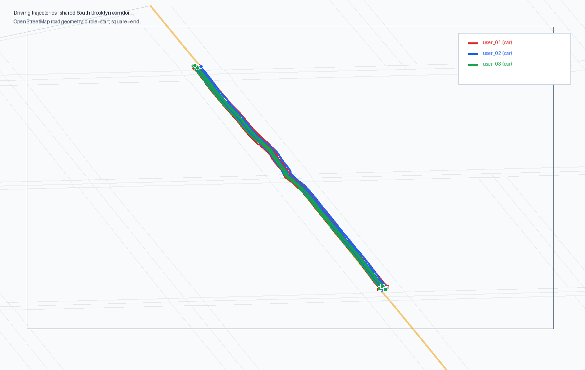
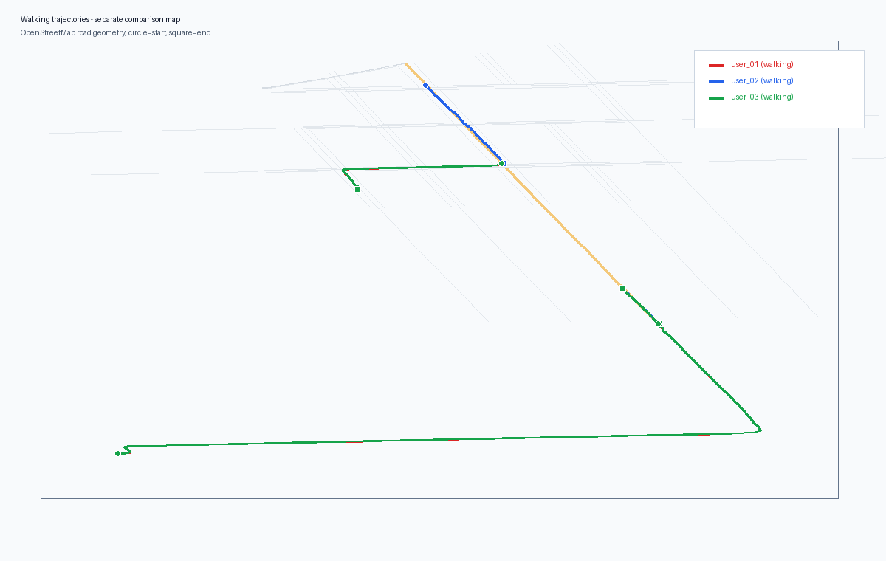

The maps are mode-specific and locally cropped. Driving traces are deliberately derived along one common South Brooklyn corridor; walking traces are shown separately.


| user | trajectory | mode | avg km/h | speed std | distance m |
|---|---|---|---|---|---|
| user_01 | user_01_car_01 | car | 55.000 | 4.950 | 518.721 |
| user_01 | user_01_car_02 | car | 61.000 | 5.490 | 520.228 |
| user_01 | user_01_car_03 | car | 58.000 | 5.220 | 521.335 |
| user_01 | user_01_car_04 | car | 64.000 | 5.760 | 518.637 |
| user_01 | user_01_walking_01 | walking | 5.100 | 0.092 | 300.443 |
| user_01 | user_01_walking_02 | walking | 5.800 | 0.104 | 1395.366 |
| user_02 | user_02_car_01 | car | 31.000 | 0.558 | 519.155 |
| user_02 | user_02_car_02 | car | 32.500 | 0.585 | 520.221 |
| user_02 | user_02_car_03 | car | 30.500 | 0.549 | 518.571 |
| user_02 | user_02_car_04 | car | 33.000 | 0.594 | 520.124 |
| user_02 | user_02_walking_01 | walking | 5.000 | 0.090 | 236.815 |
| user_02 | user_02_walking_02 | walking | 5.500 | 0.099 | 519.589 |
| user_03 | user_03_car_01 | car | 29.500 | 0.531 | 521.385 |
| user_03 | user_03_car_02 | car | 31.000 | 0.558 | 518.859 |
| user_03 | user_03_car_03 | car | 30.000 | 0.540 | 519.249 |
| user_03 | user_03_walking_01 | walking | 4.800 | 0.086 | 300.443 |
| user_03 | user_03_walking_02 | walking | 5.400 | 0.097 | 1395.366 |
| user_03 | user_03_walking_03 | walking | 5.100 | 0.092 | 236.815 |